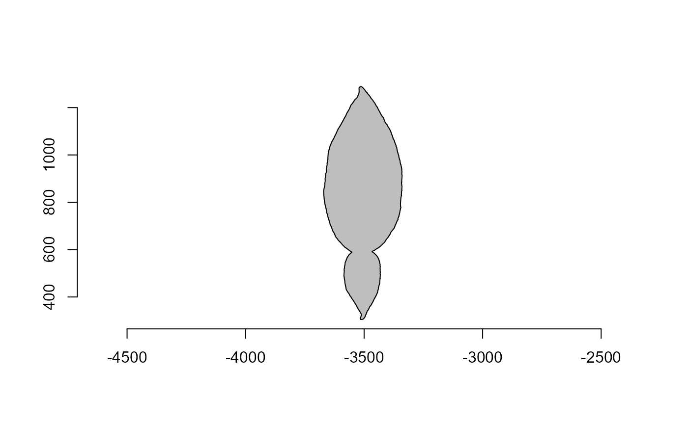
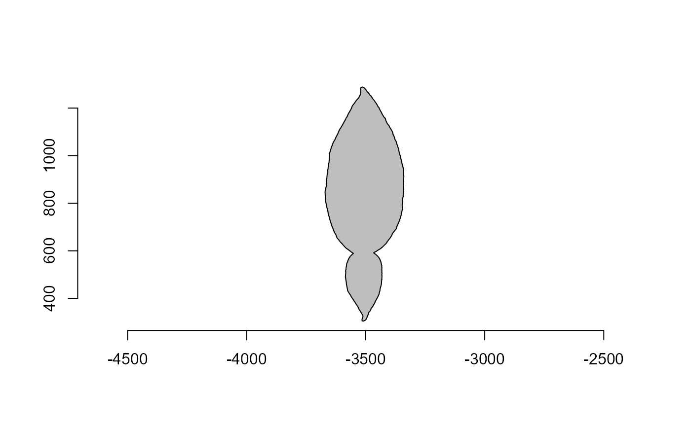

Computes Elliptical Fourier Analysis of closed outlines based on x and
y-coordinates coordinates.
Arguments
- x
A
matrix, adata.framealistof perimeter coordinates, often produced withobject_contour()or a vector of landmarks produced withlandmarks()orlandmarks_regradi().- nharm
An integer indicating the number of harmonics to use. Defaults to 10.
- align
Align the objects before computing Fourier analysis? Defaults to
FALSE. IfTRUE, the object is first aligned along the major caliper withpoly_align().- center
Center the objects on the origin before computing Fourier analysis? Defaults to
FALSE. IfTRUE, the object is first centered on the origin withpoly_center().- smooth_iter
The number of smoothing iterations to perform. This will smooth the perimeter of the objects using
poly_smooth().
Value
A list of class efourier with:
the harmonic coefficients (
an,bn,cnanddn)the estimates of the coordinates of the centroid of the configuration (
a0andc0).The number of rows (points) of the perimeter outline (
nr).The number of harmonics used (
nharm).The original coordinates (
coords).
If x is a list of perimeter coordinates, a list of efourier objects will
be returned as an object of class iefourier_lst.
References
Claude, J. (2008) Morphometrics with R, Use R! series, Springer 316 pp.
Kuhl, F. P., and Giardina, C. R. (1982). Elliptic Fourier features of a closed contour. Computer Graphics and Image Processing 18, 236–258. doi: doi:10.1016/0146-664X(82)90034-X
Examples
library(pliman)
leaf1 <- contours[[4]]
plot_polygon(leaf1)
 #### default options
# 10 harmonics (default)
# without alignment
ef <- efourier(leaf1)
efourier_coefs(ef)
# object is aligned along the major caliper with `poly_align()`
# object is centered on the origin with `poly_center()`
# using a list of object coordinates
ef2 <- efourier(contours, align = TRUE, center = TRUE)
efourier_coefs(ef2)
# reconstruct the perimeter of the object
# Use only the first one for simplicity
plot_polygon(contours[[1]] |> poly_align() |> poly_center())

efourier_inv(ef2[[1]]) |> plot_contour(col = "red", lwd = 4)
#### default options
# 10 harmonics (default)
# without alignment
ef <- efourier(leaf1)
efourier_coefs(ef)
# object is aligned along the major caliper with `poly_align()`
# object is centered on the origin with `poly_center()`
# using a list of object coordinates
ef2 <- efourier(contours, align = TRUE, center = TRUE)
efourier_coefs(ef2)
# reconstruct the perimeter of the object
# Use only the first one for simplicity
plot_polygon(contours[[1]] |> poly_align() |> poly_center())

efourier_inv(ef2[[1]]) |> plot_contour(col = "red", lwd = 4)